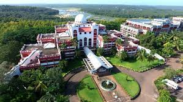

he first Engineering College established under the self financing sector in Kerala is situated on the beautiful and serene banks of Nila or Bharathapuzha. It was established as an institution with minority status in 1994. Widely acknowledged as one of the premier institutions imparting technical education in the state, the college offers admission to all categories of students with special consideration to educationally backward communities At present there are eight undergraduate programmes including B Arch and seven post graduate courses (M Tech, MCA, MBA and M Arch) and PhD programmes, in the college. More than 2000 students study in the college under the guidance of well qualified and dedicated faculty members and research guides. The college is well managed by academicians and industrialists, who are visionaries in the field. The institution has an eco-friendly and students friendly campus with state-of-the art facilities and general amenities to provide a conducive environment for students to excel in their career and life. The college is approved by AICTE and CoA and affiliated to APJ Abdul Kalam Technological University and University of Calicut for the M.Arch programme. Four programmes are accredited by National Board of Accreditation (NBA) as centre of excellence. The operations in the institute are stream lined through ISO Certification. The college offers various scholarship schemes for its students, like merit scholarships, fee waiver for financially backward students etc. The Innovation and Entrepreneurship Development Cell (IEDC) and Technology Business Incubation (TBI) Centre in the college impart training and business infrastructure for students to convert their ideas into products. The Digital Fabrication Laboratory (FabLab) assists the students by providing a place to learn, create and invent through access to the environment, skills, materials and advanced technologies. The Alumni network of the institution, spread across the globe, provides a backbone support for the development of students. In summary, this is one of the best choices for their higher studies in the state of Keral
